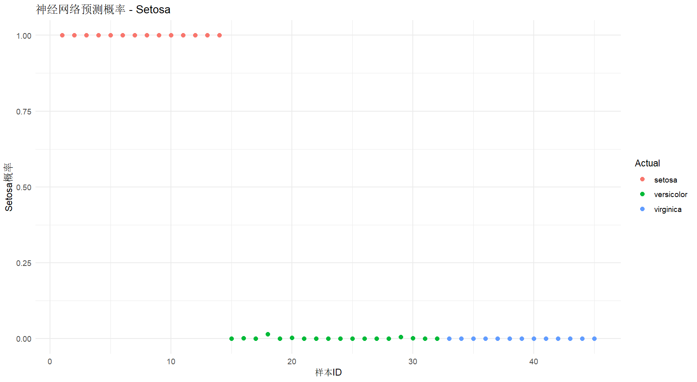

人工神经网络是受生物神经网络启发的计算模型，由大量相互连接的节点（神经元）组成。
基本组成
- 神经元：神经网络的基本处理单元
- 层：
- 输入层：接收原始特征
- 隐藏层：进行特征变换和模式学习
- 输出层：产生最终预测
- 权重和偏置：连接神经元之间的参数
- 激活函数：引入非线性，使网络能够学习复杂模式
常用激活函数：
- Sigmoid：
- Tanh：
- ReLU：
神经网络训练过程：
- 前向传播：输入数据通过网络计算输出
- 计算损失：比较预测输出与真实标签
- 反向传播：计算梯度并更新权重
- 迭代优化：重复上述过程直到收敛
算法过程
前向传播
给定一个 层的神经网络，前向传播过程如下：
其中：
- 是第 层的加权输入
- 是第 层的激活输出
- 和 是第 层的权重和偏置
- 是第 层的激活函数
损失函数
对于训练样本 ，损失函数为：
反向传播推导
误差项定义
定义第 层的误差项为：
输出层误差
输出层的误差计算为：
隐藏层误差
对于 ：
参数梯度
最终的目的是调整参数
R
1 | # 加载包 |

1 | # 使用mtcars回归 |